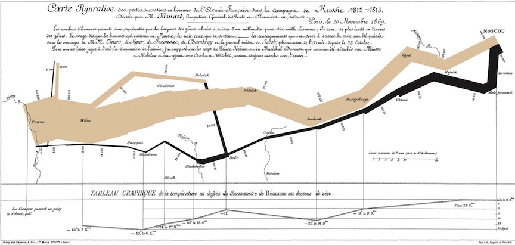

Minard’s Map of Napolean’s Russian Campaign of 1812
data from Congdon (2007) via Blangiardoa et al (2013)
read in data
library(maptools)
library(spdep)
london<-readShapePoly(" ~ download ~ /LDNSuicides")
plot(london) ## NB: no CRS
class(london)
names(london)
london$NAME
obs=c(75,145,99,168,152,173,152,169,130,117,124,119,134,90,
98,89,128,145,130,69,246,166,95,135,98,97,202,75,100,
100,153,194) ## observerd number suicides each london borough
exp=c(80.7,169.8,123.2,139.5,169.1,107.2,179.8,160.4,147.5,
116.8,102.8,91.8,119.6,114.8,131.1,136.1,116.6,98.5,
88.8,79.8,144.9,134.7,98.9,118.6,130.6,96.1,127.1,97.7,
88.5,121.4,156.8,114) ## expected number suicides each london boroughcuts<- c(0.6, 0.9, 1.0, 1.1, 1.8)
suicide.dat$SMR.cut<-cut(suicide.dat$SMR,breaks=cuts,include.lowest=TRUE)
suicide.dat$smooth.cut<-cut(suicide.dat$smooth,breaks=cuts,include.lowest=TRUE)
attr(london,"data")<-merge(data.london,suicide.dat,by="NAME")
spplot(london, c("SMR.cut", "smooth.cut"),col.regions=gray(3.5:0.5/4),main="")cholera.point<-as.ppp(cholera)
summary(cholera.point)
plot(cholera.point)
plot(density(cholera.point,20))
plot(density(cholera.point,30))
plot(pumps, add=T, col="red", pch=10, cex=3)
persp(density(cholera.point,30))
persp(density(cholera.point,30), theta=90)
persp(density(cholera.point,30), theta=180)